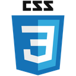
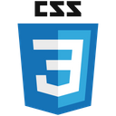

Olá Devs eu me chamo Guilherme, Sou um desenvolvedor Front-end e Back-end 🗿🍷🌐
“Nunca chore por passado e sim viva o presente de olho aberto para o futuro.”- Tupac
“Nunca chore por passado e sim viva o presente de olho aberto para o futuro.”- Tupac
🧑🏾💻 Eii devs ou recruiters desse mundo da programação me chamo Guilherme, tenho 22 anos atualmente estou cursando técnico de desenvolvimento de sistemas. Gosto de programação desde os meus 9 anos de idade tive uma experiência magnífica até hoje na área da tecnologia e venho me aperfeiçoando cada vez mais.
💻 Minhas metas a serem alcançadas:
Absorver conhecimentos em me tornar como profissional e adquirir a primeira oportunidade como estagiário na área de Dev. Estou em busca de ser reconhecido ao meu talento profissional e obtendo um conhecimento amplo.
📚 Estudando e aprimorando:
HTML • CSS • Javascript • Node.js • Express • MySQL • Typescript • C#.

.png) 



Processos Administrativos (714 horas)
Técnico em Desenvolvimento de sistemas – 7:30 horas até 11:30 horas (cursando 2021-2023)